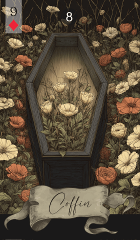

第 8 张 · 方块 9
棺材
结束
失去
蜕变
了结
终局
棺材标记着一个循环的终点。这张牌说的是了结与蜕变，说的是放下那些不再适合你的东西，好腾出位置给新的开始。
免费抽牌 →
棺材代表结束与了结。它带来的那段时间里，总有什么必须被安放下来。可能是一段关系走到尽头，可能是一份工作告一段落，也可能是一件悬了很久的事终于有了结果。它带着终局的分量，也请你承认：失去本就是生命循环里自然的一环。
这也是一张蜕变的牌——一扇门关上，另一扇才会打开，但前提是你先松手，放开已经过去的。棺材说的是接受，以及体面走过转折所需要的勇气。它请你看见更新的可能，看见放手之后才会出现的机会。
在感情里，棺材常常意味着结束：一次分手，或者一段停滞已久的关系终于有了结论。过程也许难熬，但它同时也是情感上重获自由的机会，新的联结由此才有余地。它也可能指某些模式或习惯的终止，让往后的关系更健康。
工作方面，棺材指向一份工作、一个项目或一个阶段的结束。也许是离开某个职位，也许是一项事业收场。它看上去是损失，却也给了你转向的机会，朝更让人满足的方向走，职业上就此重新开始。
棺材建议你郑重对待生命里的那些结束。允许自己难过，同时也明白：了结对成长而言是必要的。接纳蜕变，趁这段时间把旧的东西清出去，给新的开始腾出空间。
棺材关于结束与蜕变的讯息，会因为身边的牌而变得更具体、更有层次。以下是它与其余每一张雷诺曼牌的组合：
传统图样里，棺材画成一具合上的棺木或石棺，代表终局，也代表一章的收束。它带着炼金术式的转化气息——有死亡，才有新生。它请你回头审视，也请你为改变做好准备。